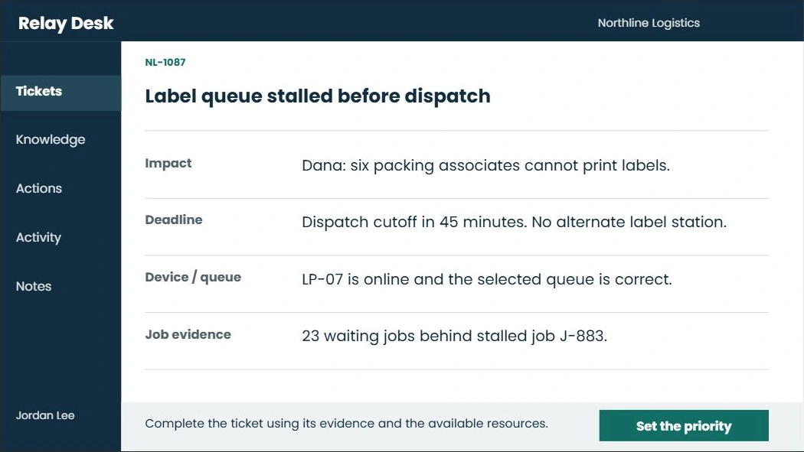
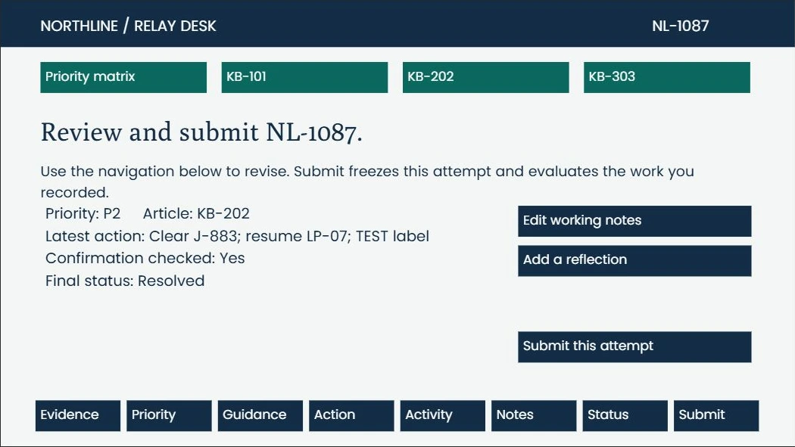
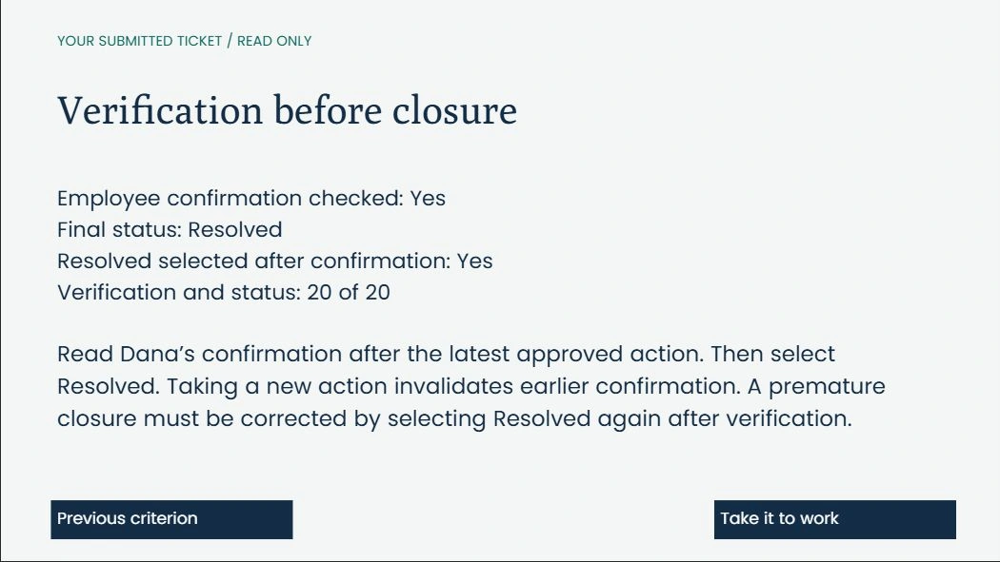

Self-directed concept / Northline Logistics
Resolve Your First Support Ticket
Work a ticket in a fictional help desk. Start with a wrong printer, then resolve a stalled label queue using evidence, approved actions, and a fresh confirmation.
52-second design preview using the actual PowerPoint layouts, with visible captions. The launch above opens the complete interactive Storyline lesson. Preview transcript.
Audience and problem
Closing a ticket is a performance decision.
New internal help-desk employees at a fictional logistics company need a repeatable method for resolving printing issues. A completed troubleshooting action does not establish that work has resumed.
The designed performance combines impact-based prioritization, relevant guidance, an approved action, useful notes and verification before closure.
Learning objectives
By the end, the learner should be able to:
- Use a company matrix to assign priority and choose guidance that fits the evidence.
- Perform an approved action and distinguish an action log from a verified result.
- Document the actual work and choose a status supported by the current employee confirmation.
Role and tools: self-directed instructional design and development; PowerPoint layouts, native Storyline controls and variables, HyperFrames video production, and AI-assisted writing, illustration and build automation. No client or learner-impact results are implied.
Three design decisions
See the instruction in the interface.

01 / Live course · Independent task
Change the problem, preserve the workflow
The independent ticket concerns a stalled label queue with six packers and a dispatch deadline. It requires different evidence and a different knowledge-base article.

02 / Live course · Submission
Evaluate the work that was actually done
The learner reviews the recorded work before submitting. Documentation selections must match the evidence, action and confirmation in this attempt.

03 / Live course · Debrief
Make closure depend on evidence
A fresh action invalidates an old confirmation. The debrief explains why closure must follow the latest approved action and current employee verification.
Assessment approach
Evaluate the work that was actually done.
Five criteria earn 20 points each: priority, article, action, documentation and verified closure. Passing requires 80/100 plus an approved action and verification before the ticket is resolved.
Structured documentation is evaluated against actual activity. The editable template and optional reflection do not imply natural-language grading. A new action invalidates previous verification and closure.
Practice structure
- DemonstrateIntroduce Relay Desk and a worked example.
- GuideFix one workstation’s printer selection.
- TransferResolve a different stalled-queue ticket independently.
- DebriefReview the submitted work against each criterion.
Guided practice provides immediate help. The independent task retains the resources and removes step-by-step hints.
Download the editable simulation workflowResources and production
Designed for transfer
The one-page Ticket Resolution Checklist carries the decision rules into future practice.
Poly headings and Poppins instructional text pair with AI-assisted illustrations. The finished courses use editable native text, controls, object states, variables and feedback layers.
Built, checked, and ready to explore
The complete 41-slide project was opened, saved, reopened and Web-published in Storyline. Visual review covered the base slides and selected interactive states. Published-player checks covered representative decisions, feedback, resources, results and retry.
The saved native trigger audit checked 1,296 submission combinations, required fields and verification order. These checks validate course logic; they are separate from learner evaluation.
Remaining validation includes a full screen-reader review, every feedback layer, broader browser testing and a learner pilot. Storyline’s accessibility checker still reports items requiring review. The 8–12 minute duration is a design target.
Proposed evaluation: observe new employees completing the task, record errors and time on task, and revise unclear evidence or controls. No measured learning gains are claimed.
Read the build-specific QA recordExperience the full lesson